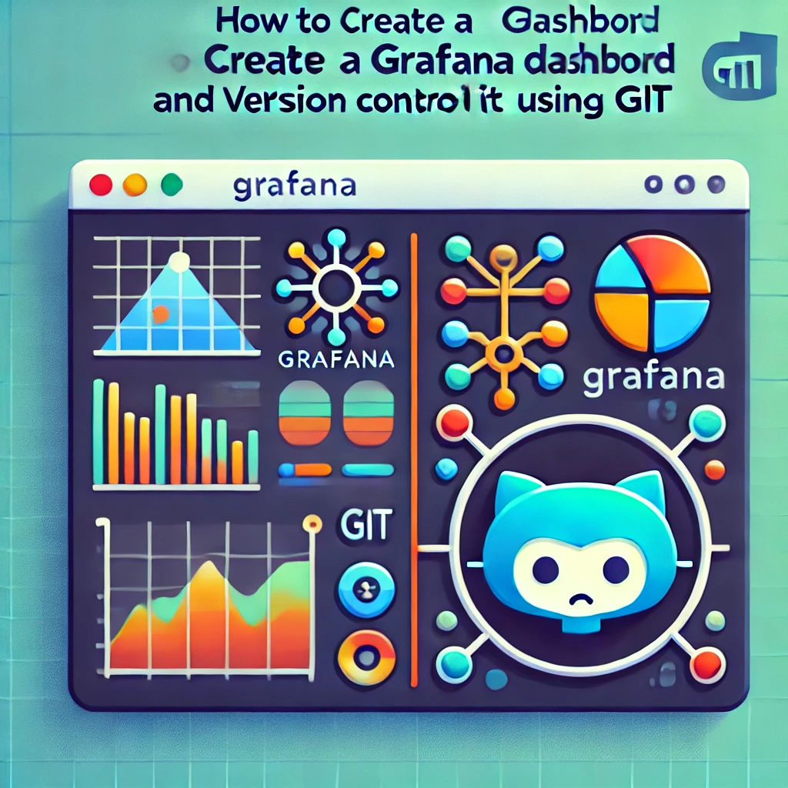

How to Create a Grafana Dashboard and Version Control It Using Git

Grafana is a powerful open-source platform for monitoring and observability. It allows you to create dynamic, visually appealing dashboards to track metrics from various data sources. Once you've crafted the perfect dashboard, it's crucial to version control it to keep track of changes and collaborate with your team. In this blog post, we'll walk you through the process of creating a Grafana dashboard, exporting it as a JSON file, and committing it to a Git repository for version control.
Table of Contents
Why Version Control Your Grafana Dashboards?
Version control is essential for managing changes to any project, and Grafana dashboards are no exception. Here are a few reasons why you should version control your Grafana dashboards:
-
Track Changes: Easily track changes made to the dashboard over time, allowing you to revert to a previous version if needed.
-
Collaborate: Work on dashboards with your team in a seamless manner by using Git, making sure everyone is on the same page.
-
Backup: Having your dashboards in a Git repository provides a reliable backup in case of accidental deletions or other issues.
Step 1: Creating a Grafana Dashboard
To start, you'll need to create a Grafana dashboard. Here’s a quick guide:
-
Log in to Grafana:
-
Open your web browser and navigate to your Grafana instance.
-
Log in using your credentials.
-
Create a New Dashboard:
-
On the Grafana home page, click the "+" icon on the left sidebar to create a new dashboard.
-
Select "Dashboard" to start with a blank dashboard.
-
Add Panels to the Dashboard:
-
Click "Add New Panel" to create visualizations. Choose a data source and configure the query to fetch data.
-
Select the visualization type (e.g., graph, table, heatmap) and customize the panel settings.
-
Add more panels as needed to complete your dashboard.
-
Customize the Dashboard:
-
Arrange the panels, set time ranges, and configure other settings according to your preferences.
-
Name your dashboard by clicking on the title at the top and editing it.
-
Save the Dashboard:
-
Click the "Save" button at the top right.
-
Choose a folder to save the dashboard in or save it in the default "General" folder.
-
Optionally, add a description and tags.
Step 2: Exporting the Dashboard as JSON
Once your dashboard is ready, the next step is to export it as a JSON file. This JSON file will contain all the configurations and settings of your dashboard.
-
Open the Dashboard:
-
Navigate to the dashboard you want to export.
-
Export the Dashboard:
-
Click on the dashboard title to open the options menu.
-
Select "Share dashboard."
-
Go to the "Export" tab, then click "Export for sharing externally."
-
Click "Save to file" to download the dashboard JSON file.
Step 3: Committing the Dashboard JSON to Git
Now that you have the JSON file, it's time to commit it to a Git repository.
-
Initialize a Git Repository (if not already initialized):
-
Open your terminal and navigate to the directory where you want to store the dashboard JSON file.
-
Run the following command to initialize a Git repository:
bash git init -
Move the JSON File to the Repository:
-
Move or copy the downloaded JSON file to your Git repository directory.
-
Stage the File for Commit:
-
Stage the JSON file by running the following command:
bash git add your_dashboard.json -
Commit the File:
-
Commit the file with a meaningful commit message:
bash git commit -m "Add Grafana dashboard JSON file" -
Push the Commit to a Remote Repository (Optional):
-
If you have a remote repository (e.g., GitHub, GitLab), push the commit:
bash git remote add origin <remote_repository_url> git push -u origin master
Step 4: Automating the Process (Optional)
If you're frequently updating your dashboards, it may be worth automating the process of exporting and committing the JSON file.
-
Automate JSON Export:
-
Grafana’s HTTP API allows you to automate the export of dashboards. You can write a script that fetches the JSON file from Grafana and commits it to your Git repository.
-
Set Up a CI/CD Pipeline:
-
Integrate your repository with a CI/CD tool like Jenkins, GitLab CI, or GitHub Actions to automatically validate or deploy the dashboard configuration when changes are pushed to the repository.
Example Dashboard JSON Code
Here's an example of what a simple Grafana dashboard JSON might look like:
{
"title": "Sample Dashboard",
"panels": [
{
"type": "graph",
"title": "HTTP Requests Rate",
"targets": [
{
"expr": "rate(http_requests_total[5m])",
"legendFormat": "{{method}} {{status}}",
"refId": "A"
}
],
"xaxis": {
"mode": "time"
},
"yaxis": {
"format": "short"
}
}
],
"time": {
"from": "now-15m",
"to": "now"
},
"refresh": "5s"
}
Conclusion
By following these steps, you can efficiently manage your Grafana dashboards with version control, ensuring that every change is tracked, and backups are readily available. Whether you're working solo or as part of a team, version controlling your dashboards with Git is a best practice that will save you time and headaches in the long run. Happy monitoring!
This guide should help you streamline the creation and version control of your Grafana dashboards, making them easier to manage and collaborate on. Whether you're new to Grafana or a seasoned pro, these steps provide a solid foundation for better dashboard management.
Imported from rifaterdemsahin.com · 2025